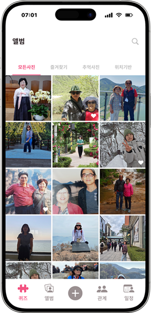
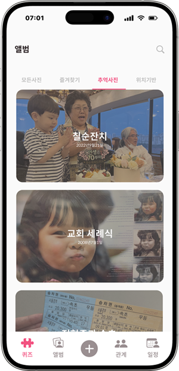
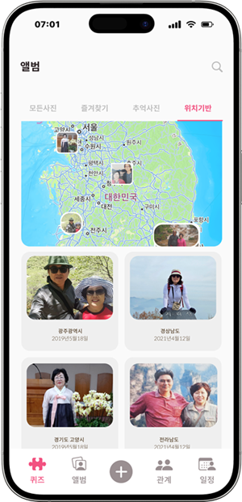

가족과 함께하는 기억 관리
기억의 조각


2025년 보건복지부가 조사한 치매역학조사에 따르면 치매 환자 수는 약 97만 명이며, 2026년에는 100만 명을
넘을 것으로 예상됩니다.
저희는 치매 환자들의 기억 회복을 돕는 서비스가 필요하다고 판단했습니다.
딥페이크 기술을 긍정적으로 활용하여 부정적인 인식을 전환
기억이 흐려질 때의 감정과 돌봄 속 불편함에 대해 이야기를 들어보았습니다.
치매 초기 환자와 가족들은 어떤 점에서 가장 불안하고 힘들까요?
IA
“우리만의 4가지 서비스”
걱정마세요 기억의 조각이 끝까지 함께 할게요
가족 이름 맞히기
딥페이크 기술로 구현된 퀴즈를 통해 가족의 얼굴, 이름,
가족 정보 등을 자연스럽게 되새기며 소중한 순간을 다시 떠올릴 수 있어요.
단어 외우기
카테고리별 퀴즈로 다양한 단어를 자연스럽게 반복 학습할 수 있어요.
기억력을 자극해보세요.
카테고리별 단어 학습
관심 분야로 구성된 7가지 카테고리를 통해
단어를 쉽고 재미있게 외울 수 있어요.
영상 확인 후
가족의 이름을 입력
정답일 때 인물마다
정답 멘트 다름
틀렸을 때 인물마다
오답 멘트 다름
힌트 아이콘 클릭 시
인물 특징 설명
02
잊혀진 이름을 다시 꺼내보는, 추억앨범
모든사진
저장한 사진들을 한눈에
즐겨찾기
애정이 가는 사진들을 모아보기
추억사진
년도별, 월별 정리
위치기반
사진을 찍은 위치
업로드하기
사진을 업로드하면 딥페이크가 인물을 인식해 사진을
영상으로 갤러리 • 카메라 • 파일에서 자유롭게 선택해 주세요.
03
복잡한 가족관계 한눈에 쉽게, 가족관계도
양방향 스크롤
자유롭게 탐색하세요.
양방향 스크롤로 넓은 화면을
더욱 더 편하게 이동할 수 있어요!
상세페이지
잊고 있던 기억까지 기억나게.
가족의 자세한 정보를 확인하세요.
04
일정들을 더 기억하기 쉽게, 일정관리
기억하지 못했던 오늘의
일정을 알려드려요.
당신의 잊혀진 일정도 시간 순으로 쉽게 확인해요!
미처 기억하지 못한 일정들을 알려드려요.
“당신의 잃어버린 기억의 조각을 맞춰드립니다.”
치매 환자와 가족들을 위한 커뮤니케이션 앱으로,
딥페이크 기술을 활용하여 환자의 기억 복원을 도와주는 앱 서비스
내용
내용
내용